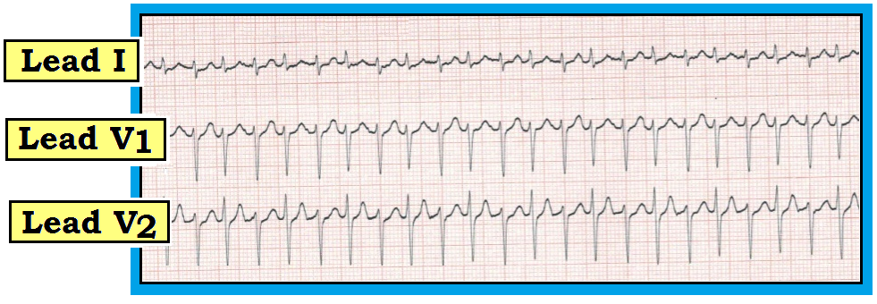
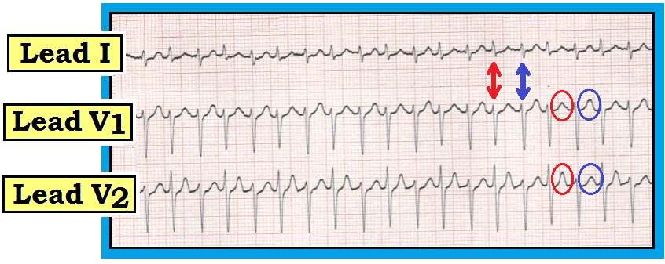

ECG Blog #83 — Cứ cách một nhát QRST lại khác
Hãy đọc dải nhịp 3 chuyển đạo trong Hình 1 — ghi từ một bệnh nhân đang có nhịp SVT khá (nhưng không hoàn toàn) đều.
- Vì sao hình dạng QRS thay đổi nhẹ từ nhát này sang nhát khác?


Trả lời cho Hình 1:
Mặc dù thoạt đầu có thể muốn đọc nhịp này là một dạng nhịp đôi — nhưng cách diễn giải chính xác hơn là điện thế luân phiên (electrical alternans). Dù chúng tôi chấp nhận mô tả chung nhịp này là một SVT “đều” (nhịp nhanh trên thất – SupraVentricular Tachycardia) — thật ra vẫn có sự dao động theo pha nhẹ-nhưng-có-thật của khoảng R‑R, xảy ra cứ cách một nhát. Đây không phải do một dạng nhịp đôi — mà là do R‑R luân phiên. Ngoài ra — có cả QRS luân phiên (các mũi tên hai đầu màu đỏ và xanh trong Hình 2) — và sóng T luân phiên (các vòng tròn đỏ và xanh trong Hình 2). Nghĩa là — hình dạng QRS thay đổi cứ cách một nhát. Điều này khó thấy ở chuyển đạo V1 — nhưng rõ hơn ở chuyển đạo V2, nơi sóng R đầu tiên có chiều cao khác biệt rõ từ nhát này sang nhát kế tiếp. Tương tự — hình dạng sóng T thay đổi cứ cách một nhát, và điều này rõ hơn hẳn ở chuyển đạo V2, nơi cứ cách một sóng T lại nhọn hơn (các vòng tròn đỏ và xanh ở chuyển đạo V2).
- Ý nghĩa lâm sàng của các dạng điện thế luân phiên này ở một bệnh nhân SVT — là gần như chắc chắn cơ chế có liên quan tới vào lại (reentry). Có thể có hoặc không có một đường phụ ẩn (concealed accessory pathway).


Thế nào là Điện thế Luân phiên?
Hiện tượng hấp dẫn điện thế luân phiên — là một thực thể lâm sàng tương đối hiếm gặp và thường bị hiểu sai. Khi xảy ra, nó thường bị bỏ sót. Nhìn vào Hình 1 sẽ hiểu vì sao: Dấu hiệu điện tâm đồ này quả thật có thể rất tinh tế.
- Điện thế luân phiên là một thuật ngữ chung bao gồm nhiều cơ chế sinh lý bệnh khác nhau. Nó không chỉ xảy ra trong chèn ép tim (pericardial tamponade) — mà ngày càng được ghi nhận đi kèm với nhiều bệnh cảnh lâm sàng hơn.
- Cần phân biệt giữa luân phiên điện và luân phiên cơ học. Bản thân thuật ngữ “luân phiên” (alternans) — chỉ đơn thuần cho biết có dao động theo pha của một tín hiệu tim nào đó từ nhát này sang nhát kế tiếp trong chu chuyển tim. Đó có thể là cường độ của mạch (hoặc huyết áp đo được) — hoặc là một hay nhiều dạng sóng trên bản ghi điện tâm đồ.
LƯU Ý: Có thể hữu ích nếu trước tiên định nghĩa các hiện tượng luân phiên khác đôi khi bị nhầm với các biểu hiện khác nhau trên điện tâm đồ (nhất là vì các dạng hiện tượng luân phiên khác này cũng có thể gặp trong chèn ép tim).
- Mạch luân phiên (pulsus alternans) — là một dạng luân phiên cơ học. Nhịp tim đều — nhưng cung lượng tim thay đổi từ nhát này sang nhát khác. Gặp trong rối loạn chức năng tâm thu nặng. Cần phân biệt mạch luân phiên với mạch nhịp đôi (bigeminal pulse) — trong đó một nhát yếu hơn theo sau nhát mạnh hơn sau một khoảng thời gian ngắn hơn (như khi nhát luân phiên là một PVC, vốn dĩ tạo ra cung lượng tim thấp hơn).
- Cũng cần phân biệt mạch luân phiên với mạch nghịch thường (pulsus paradoxus) — trong đó biên độ mạch giảm sờ thấy được (hoặc huyết áp đo được tụt >10mm) khi hít vào bình thường. Mặc dù mạch luân phiên và mạch nghịch thường đều có thể gặp trong chèn ép tim — chúng là những hiện tượng khác với các dạng điện thế luân phiên.
Điện thế Luân phiên: Định nghĩa/Đặc điểm/Cơ chế
Điện thế luân phiên — là sự thay đổi từ nhát này sang nhát khác ở một hay nhiều phần của bản ghi điện tâm đồ. Nó có thể xảy ra cứ cách một nhát — hoặc theo một tỉ lệ lặp lại khác (3:1; 4:1; v.v.). Biên độ hoặc hướng của sóng P, phức bộ QRS, đoạn ST và/hoặc sóng T đều có thể bị ảnh hưởng (mặc dù sóng P luân phiên thì hiếm). Cũng có thể gặp luân phiên về thời gian các khoảng (PR, QRS hoặc QT).
- Điện thế luân phiên — được Herring quan sát lần đầu trong phòng thí nghiệm năm 1909. Một năm sau, Sir Thomas Lewis báo cáo trên lâm sàng, ông mô tả hiện tượng này xảy ra “hoặc khi cơ tim bình thường nhưng tần số tim rất nhanh hoặc khi có bệnh tim nặng và tần số bình thường”. Mô tả năm 1910 này của Lewis đến nay vẫn còn nguyên giá trị, nhắc chúng ta về 2 bệnh cảnh lâm sàng chính hay gặp điện thế luân phiên nhất: i) Nhịp nhanh trên thất do vào lại; và ii) Chèn ép tim.
Cơ chế:
Có 3 dạng cơ bản của hiện tượng điện thế luân phiên — mỗi dạng liên quan tới một cơ chế sinh lý bệnh khác nhau: i) Luân phiên tái cực; ii) Luân phiên dẫn truyền và tính trơ; và iii) Luân phiên do chuyển động bất thường của tim. Có thể có một cơ chế tế bào chung nằm bên dưới mỗi quá trình này, liên quan tới sự giải phóng hoặc tái hấp thu calci bất thường trong lưới nội cơ tương.
- Tái cực luân phiên (repolarization alternans) — là sự thay đổi từ nhát này sang nhát khác của đoạn ST và/hoặc sóng T. Sự luân phiên hình dạng đoạn ST (hoặc mức độ ST chênh lên hay chênh xuống) — thường liên quan tới thiếu máu cục bộ. Ngược lại — sóng T luân phiên thường gắn với thay đổi tần số tim hoặc thời gian QT (nhất là khi QT kéo dài). Ở bệnh nhân QT dài — sóng T luân phiên có thể báo trước xoắn đỉnh (Torsades de Pointes) sắp xảy ra. Cả ST luân phiên lẫn sóng T luân phiên đều từng được ghi nhận đi trước các rối loạn nhịp thất ác tính. Vì vậy, dạng điện thế luân phiên này có thể mang ý nghĩa tiên lượng xấu quan trọng khi gặp trong một số bệnh cảnh. Tuy vậy — nhiều bệnh cảnh lâm sàng đã được ghi nhận có kèm tái cực luân phiên, nên không phải lúc nào cũng kéo theo tiên lượng xấu. Trong số các bệnh cảnh này có hội chứng QT dài bẩm sinh — rối loạn điện giải nặng (hạ calci máu; hạ kali máu; hạ magnesi máu) — bệnh cơ tim do rượu hoặc bệnh cơ tim phì đại — thuyên tắc phổi cấp — xuất huyết dưới nhện — ngừng tim và giai đoạn sau hồi sinh — và nhiều dạng thiếu máu cục bộ (tự phát hoặc gây ra bởi nghiệm pháp gắng sức trên thảm chạy hay kích thích khác).
- Dẫn truyền và Tính trơ luân phiên — là sự thay đổi trong lan truyền xung động dọc theo một phần nào đó của hệ dẫn truyền. Điều này có thể do dao động tần số tim hoặc hoạt động thần kinh, hoặc do điều trị thuốc. Biểu hiện trên điện tâm đồ của dạng luân phiên này có thể gồm luân phiên hình dạng của sóng P, phức bộ QRS hoặc luân phiên khác biệt về thời gian của khoảng P-R hoặc R-R. Đặc biệt — QRS luân phiên trong các nhịp SVT QRS hẹp đã được ghi nhận đi kèm với nhịp nhanh do vào lại. Mặc dù việc nhận ra QRS luân phiên trong một SVT đều thường cho thấy dẫn truyền ngược dòng qua một AP (đường phụ – Accessory Pathway) — hiện tượng này cũng đã gặp ở bệnh nhân PSVT/AVNRT đơn thuần, với vòng vào lại chỉ giới hạn trong nút AV. Vì vậy — nhận ra QRS luân phiên trong một SVT đều không chứng minh được sự tồn tại của một đường phụ. Luân phiên dẫn truyền và tính trơ có thể gặp trong nhịp nhanh vào lại liên quan WPW cũng như nhịp nhanh vào lại phụ thuộc nút AV — rung nhĩ — thuyên tắc phổi cấp — dập cơ tim — và rối loạn chức năng thất trái nặng. LƯU Ý: Đôi khi — hiện tượng luân phiên có thể gặp trong VT đơn dạng (Maury và Metzger).
- Chuyển động tim luân phiên (cardiac motion alternans) — là hậu quả của sự chuyển động của tim chứ không phải luân phiên điện học. Bệnh cảnh lâm sàng quan trọng nhất gắn với chuyển động luân phiên là tràn dịch màng ngoài tim lượng lớn — dù chuyển động luân phiên cũng đã được ghi nhận ở một số ca bệnh cơ tim phì đại. Điều quan trọng cần hiểu là không phải mọi trường hợp tràn dịch màng ngoài tim đều gây điện thế luân phiên. Sự xuất hiện điện thế luân phiên toàn bộ (của sóng P, phức bộ QRS và sóng T) — thật sự có khả năng là dấu hiệu báo trước sắp chèn ép tim. Đáng tiếc — độ nhạy của điện thế luân phiên toàn bộ để dự báo chèn ép tim lại kém (tức là, đa số bệnh nhân bị chèn ép tim không có biểu hiện điện thế luân phiên trước đó). Vì vậy — thấy điện thế luân phiên toàn bộ ở bệnh nhân tràn dịch màng ngoài tim lượng lớn có thể hữu ích — nhưng không thấy dấu hiệu điện tâm đồ này hoàn toàn không loại trừ khả năng đang có chèn ép tim. Các nghiên cứu siêu âm tim ở bệnh nhân chèn ép tim đã được xác định cho thấy điện thế luân phiên đồng bộ với và là hậu quả trực tiếp của chuyển động đong đưa như quả lắc của tim bên trong túi màng ngoài tim giãn to, chứa đầy dịch ở bệnh nhân tràn dịch màng ngoài tim lượng lớn.
Điện thế Luân phiên: Những điểm lâm sàng CHÍNH
Tóm lại, điện thế luân phiên không thường gặp — nhưng nó có xảy ra. Bạn sẽ gặp nó. Có lẽ bạn đã gặp nó vài lần mà không hề nhận ra. Điện thế luân phiên là một khái niệm hấp dẫn nhưng nâng cao.
- Theo kinh nghiệm của chúng tôi — điện thế luân phiên hay gặp nhất đi kèm với các nhịp SVT đều (như trong Hình 1). Gặp nó trong bối cảnh này gợi ý (nhưng không chứng minh) sự tồn tại của một AP (đường phụ – Accessory Pathway). Bất kể cơ chế của SVT đều là AVNRT hay AVRT — nhiều khả năng có liên quan tới vào lại. Kết luận này có thể hữu ích khi cân nhắc các can thiệp thăm dò và điều trị tiềm năng.
- Ở bệnh nhân viêm màng ngoài tim — bóng tim to trên X-quang ngực — hay đơn giản là khó thở không rõ nguyên nhân — nhận ra điện thế luân phiên cần gợi ý khả năng có tràn dịch màng ngoài tim đáng kể, có thể kèm chèn ép tim. Tuy vậy — điện thế luân phiên là một dấu hiệu điện tâm đồ không đặc hiệu, cũng có thể chỉ ra thiếu máu cơ tim cục bộ, rối loạn chức năng thất trái và/hoặc khả năng của bất kỳ yếu tố thúc đẩy nào khác. ĐIỀU CỐT LÕI: Nếu bạn thấy điện thế luân phiên — hãy tìm một bệnh cảnh lâm sàng nền có thể gây ra dấu hiệu điện tâm đồ này.
- Bản thân sự xuất hiện điện thế luân phiên — không mang ý nghĩa tiên lượng xấu nào ngoài những gì gắn với mức độ nặng của bệnh lý nền. Hai ngoại lệ của quy tắc chung này là: i) Ở bệnh nhân QT kéo dài hoặc thiếu máu cục bộ nặng — nhận ra điện thế luân phiên có thể báo trước diễn tiến xấu thành xoắn đỉnh hoặc VT/VFib; và, ii) Ở bệnh nhân tràn dịch màng ngoài tim lượng lớn — sự xuất hiện điện thế luân phiên toàn bộ (của sóng P, phức bộ QRS và sóng T) gợi ý rằng lúc này có thể đã có chèn ép tim.
- T.B. — Hãy nhớ rằng không phải mọi trường hợp tràn dịch màng ngoài tim đều biểu hiện điện thế thấp và điện thế luân phiên ... (Sinh lý bệnh của điện thế luân phiên khi tràn dịch màng ngoài tim lượng lớn — là "tim đong đưa" (swinging heart) trong túi màng ngoài tim. Vì vậy, ít khả năng thấy luân phiên khi tràn dịch lượng nhỏ hơn — và ngay cả khi tràn dịch lượng lớn, không phải mọi trường hợp đều biểu hiện luân phiên ...).
-------------------------------------
LỜI CẢM ƠN: Xin cảm ơn Jenda Enis Stros đã cho phép tôi sử dụng điện tâm đồ trong Hình 1.
-------------------------------------
- Để biết thêm thông tin — TRUY CẬP:
- Để xem bản pdf của Mục 14.0 — về Điện thế Luân phiên (trích từ ECG-2014-ePub của chúng tôi).
-------------------------------------